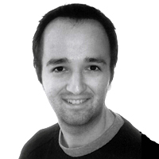

Kai Koenig
Developer, Community Professional, Author, Event Organizer
Bio: Kai is a Software Solutions Architect from New Zealand. A few years ago he started a new venture providing professional services for Adobe's rich client and enterprise technologies as well as other web platforms under the brand Ventego Creative.
Before that he spent a few years working as a Software Solutions Architect for various Marcomedia and Adobe partner companies in Europe and Asia-Pacific. Kai started his career quite a few years ago when using Dreamweaver 2 to build HTML web pages during an university class. From there he lectured software development in Java before moving into software development using ColdFusion, Java, Flash, Flex, JavaScript, jQuery and many other technologies.
Kai holds a variety of Adobe certifications and is an Adobe Master Instructor for the Flex, ColdFusion, Connect and LiveCycle curriculum. He has a Master of Science degree in Maths, Computer Science and Philosophy and always tries to find a way of digging deeper into the theories of language and parser construction.
He's an Adobe Ambassador in the AsiaPacific region, an Adobe Community Professional and runs the Adobe Web Development User Group in Wellington, New Zealand. Besides that Kai is blogging as Agent K in Blog in Black (http://www.bloginblack.de), regularly publishing reviews and technical articles on Adobe technology in several German IT-magazines and enjoying his life in New Zealand jointly with his wife Diane. These days, the best way to get in touch with him is Twitter: @agentK.